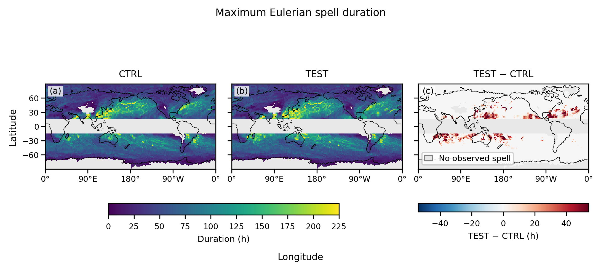

Energy Exascale Earth System Model
Home
Figures
Movies
Resources
Spell duration
Frequency
Regions
Duration
F19 Maximum spell duration

Maps of maximum Eulerian atmospheric river spell duration in hours for CTRL and TEST, and their difference. Gray marks cells with no observed spell.